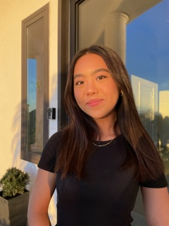

larsyuen@bu.edu | 914-574-1099 | Boston, MA 02215
About Me
Hello, my name is Lauren Yuen and I am a Junior at Boston University studying Psychology and Innovation & Entrepreneurship. I am passionate about UX Design and am currently involved in a startup compiling user research.